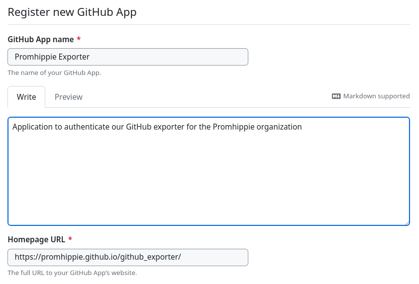
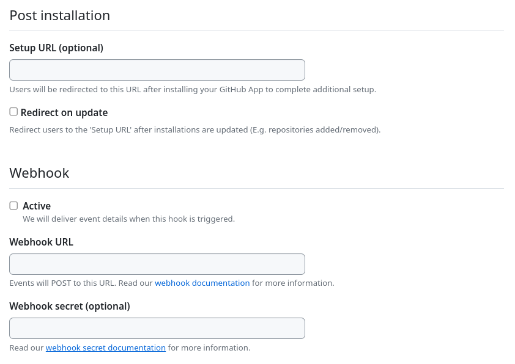

Installation
We won’t cover further details how to properly setup Prometheus
itself, we will only cover some basic setup based on docker-compose.
But if you want to run this exporter without docker-compose you
should be able to adopt that to your needs.
First of all we need to prepare a configuration for Prometheus
that includes the exporter based on a static configuration with the container
name as a hostname:
global:
scrape_interval: 1m
scrape_timeout: 10s
evaluation_interval: 1m
scrape_configs:
- job_name: github
static_configs:
- targets:
- github_exporter:9504
After preparing the configuration we need to create the docker-compose.yml
within the same folder, this docker-compose.yml starts a simple
Prometheus instance together with the exporter. Don’t forget to
update the environment variables with the required credentials.
version: '2'
volumes:
prometheus:
services:
prometheus:
image: prom/prometheus:latest
restart: always
ports:
- 9090:9090
volumes:
- prometheus:/prometheus
- ./prometheus.yml:/etc/prometheus/prometheus.yml
github_exporter:
image: promhippie/github-exporter:latest
restart: always
environment:
- GITHUB_EXPORTER_TOKEN=bldyecdtysdahs76ygtbw51w3oeo6a4cvjwoitmb
- GITHUB_EXPORTER_LOG_PRETTY=true
- GITHUB_EXPORTER_ORG=promhippie
- GITHUB_EXPORTER_REPO=promhippie/example
Since our latest tag always refers to the master branch of the Git
repository you should always use some fixed version. You can see all available
tags at DockerHub or Quay, there you will see that we
also provide a manifest, you can easily start the exporter on various
architectures without any change to the image name. You should apply a change
like this to the docker-compose.yml file:
github_exporter:
- image: promhippie/github-exporter:latest
+ image: promhippie/github-exporter:1.0.0
restart: always
environment:
- GITHUB_EXPORTER_TOKEN=bldyecdtysdahs76ygtbw51w3oeo6a4cvjwoitmb
- GITHUB_EXPORTER_LOG_PRETTY=true
- GITHUB_EXPORTER_ORG=promhippie
- GITHUB_EXPORTER_REPO=promhippie/example
If you want to access the exporter directly you should bind it to a local port,
otherwise only Prometheus will have access to the exporter. For
debugging purpose or just to discover all available metrics directly you can
apply this change to your docker-compose.yml, after that you can access it
directly at http://localhost:9504/metrics:
github_exporter:
image: promhippie/github-exporter:latest
restart: always
+ ports:
+ - 127.0.0.1:9504:9504
environment:
- GITHUB_EXPORTER_TOKEN=bldyecdtysdahs76ygtbw51w3oeo6a4cvjwoitmb
- GITHUB_EXPORTER_LOG_PRETTY=true
- GITHUB_EXPORTER_ORG=promhippie
- GITHUB_EXPORTER_REPO=promhippie/example
It’s also possible to provide the token to access the GitHub API gets provided
by a file, in case you are using some kind of secret provider. For this use case
you can write the token to a file on any path and reference it with the
following format:
github_exporter:
image: promhippie/github-exporter:latest
restart: always
environment:
- - GITHUB_EXPORTER_TOKEN=bldyecdtysdahs76ygtbw51w3oeo6a4cvjwoitmb
+ - GITHUB_EXPORTER_TOKEN=file://path/to/secret/file/with/token
- GITHUB_EXPORTER_LOG_PRETTY=true
- GITHUB_EXPORTER_ORG=promhippie
- GITHUB_EXPORTER_REPO=promhippie/example
Besides the file:// format we currently also support base64:// which expects
the token in a base64 encoded format. This functionality can be used for the
token and other secret values like the private key for GitHub App authentication
so far.
If you want to collect the metrics of all repositories within an organization
you are able to use globbing, but be aware that all repositories matched by
globbing won’t provide metrics for the number of subscribers, the number of
repositories in the network, if squash merges are allowed, if rebase merges are
allowed or merge commits are allowed. These metrics are only present for
specific repositories like the example mentioned above.
github_exporter:
image: promhippie/github-exporter:latest
restart: always
environment:
- GITHUB_EXPORTER_TOKEN=bldyecdtysdahs76ygtbw51w3oeo6a4cvjwoitmb
- GITHUB_EXPORTER_LOG_PRETTY=true
- GITHUB_EXPORTER_ORG=promhippie
- - GITHUB_EXPORTER_REPO=promhippie/example
+ - GITHUB_EXPORTER_REPO=promhippie/*_exporter,promhippie/prometheus*
If you want to secure the access to the exporter you can provide a web config.
You just need to provide a path to the config file in order to enable the
support for it, for details about the config format look at the
documentation section:
github_exporter:
image: promhippie/github-exporter:latest
restart: always
environment:
+ - GITHUB_EXPORTER_WEB_CONFIG=path/to/web-config.json
- GITHUB_EXPORTER_TOKEN=bldyecdtysdahs76ygtbw51w3oeo6a4cvjwoitmb
- GITHUB_EXPORTER_LOG_PRETTY=true
- GITHUB_EXPORTER_ORG=promhippie
- GITHUB_EXPORTER_REPO=promhippie/example
If you want to use the workflows exporter you are forced to expose the exporter
on the internet as the exporter got to receive webhooks from GitHub. Otherwise
you won’t be able to receive information about the workflows which could be
transformed to metrics.
To enable the webhook endpoint you should prepare a random secret which gets
used by the endpoint and the GitHub webhook, it can have any format and any
length.
Make sure that the exporter is reachable on the /github endpoint and add the
following environment variables, best would be to use some kind of reverse proxy
in front of the exporter which enforces connections via HTTPS or to properly
configure HTTPS access via web configuration.
github_exporter:
image: promhippie/github-exporter:latest
restart: always
environment:
+ - GITHUB_EXPORTER_COLLECTOR_WORKFLOWS=true
+ - GITHUB_EXPORTER_WEBHOOK_SECRET=your-prepared-random-secret
- GITHUB_EXPORTER_TOKEN=bldyecdtysdahs76ygtbw51w3oeo6a4cvjwoitmb
- GITHUB_EXPORTER_LOG_PRETTY=true
- GITHUB_EXPORTER_ORG=promhippie
- GITHUB_EXPORTER_REPO=promhippie/example
After you have enabled the workflow collector and made sure that the endpoint is
reachable by GitHub you can look at the webhook section of this
documentation to see how to configure the webhook on your GitHub organization
or repository.
If you want to use a GitHub application instead of a personal access token
please take a look at the application section and add the
following environment variables after that:
github_exporter:
image: promhippie/github-exporter:latest
restart: always
environment:
+ - GITHUB_EXPORTER_APP_ID=your-application-id
+ - GITHUB_EXPORTER_INSTALLATION_ID=your-installation-id
+ - GITHUB_EXPORTER_PRIVATE_KEY=file://path/to/secret.pem
- - GITHUB_EXPORTER_TOKEN=bldyecdtysdahs76ygtbw51w3oeo6a4cvjwoitmb
- GITHUB_EXPORTER_LOG_PRETTY=true
- GITHUB_EXPORTER_ORG=promhippie
- GITHUB_EXPORTER_REPO=promhippie/example
If you prefer to provide the private key as a string instead you could also
provide is in a base64 encoded format:
github_exporter:
image: promhippie/github-exporter:latest
restart: always
environment:
- GITHUB_EXPORTER_APP_ID=your-application-id
- GITHUB_EXPORTER_INSTALLATION_ID=your-installation-id
+ - GITHUB_EXPORTER_PRIVATE_KEY=base64://Q0VSVElGSUNBVEU=
- - GITHUB_EXPORTER_PRIVATE_KEY=file://path/to/secret.pem
- GITHUB_EXPORTER_LOG_PRETTY=true
- GITHUB_EXPORTER_ORG=promhippie
- GITHUB_EXPORTER_REPO=promhippie/example
Finally the exporter should be configured fine, let’s start this stack with
docker-compose, you just need to execute docker-compose up within
the directory where you have stored the prometheus.yml and
docker-compose.yml.
That’s all, the exporter should be up and running. Have fun with it and
hopefully you will gather interesting metrics and never run into issues. You can
access the exporter at
http://localhost:9504/metrics and
Prometheus at http://localhost:9090.
Configuration
- GITHUB_EXPORTER_LOG_LEVEL
- Only log messages with given severity, defaults to
info
- GITHUB_EXPORTER_LOG_PRETTY
- Enable pretty messages for logging, defaults to
false
- GITHUB_EXPORTER_WEB_ADDRESS
- Address to bind the metrics server, defaults to
0.0.0.0:9504
- GITHUB_EXPORTER_WEB_PATH
- Path to bind the metrics server, defaults to
/metrics
- GITHUB_EXPORTER_WEB_PPROF
- Enable pprof debugging for server, defaults to
false
- GITHUB_EXPORTER_WEB_TIMEOUT
- Server metrics endpoint timeout, defaults to
10s
- GITHUB_EXPORTER_WEB_CONFIG
- Path to web-config file
- GITHUB_EXPORTER_WEBHOOK_PATH
- Path to webhook target for GitHub, defaults to
/github
- GITHUB_EXPORTER_WEBHOOK_SECRET
- Secret used by GitHub to access webhook
- GITHUB_EXPORTER_DATABASE_DSN
- DSN for the database connection
- GITHUB_EXPORTER_REQUEST_TIMEOUT
- Timeout requesting GitHub API, defaults to
5s
- GITHUB_EXPORTER_TOKEN
- Access token for the GitHub API, also supports file:// and base64://
- GITHUB_EXPORTER_APP_ID
- App ID for the GitHub app, defaults to
0
- GITHUB_EXPORTER_INSTALLATION_ID
- Installation ID for the GitHub app, defaults to
0
- GITHUB_EXPORTER_PRIVATE_KEY
- Private key for the GitHub app, also supports file:// and base64://
- GITHUB_EXPORTER_BASE_URL
- URL to access the GitHub Enterprise API
- GITHUB_EXPORTER_INSECURE
- Skip TLS verification for GitHub Enterprise, defaults to
false
- GITHUB_EXPORTER_ENTERPRISE, GITHUB_EXPORTER_ENTERPRISES
- Enterprises to scrape metrics from, comma-separated list
- GITHUB_EXPORTER_ORG, GITHUB_EXPORTER_ORGS
- Organizations to scrape metrics from, comma-separated list
- GITHUB_EXPORTER_REPO, GITHUB_EXPORTER_REPOS
- Repositories to scrape metrics from, comma-separated list
- GITHUB_EXPORTER_PER_PAGE
- Number of records per page for API requests, defaults to
500
- GITHUB_EXPORTER_COLLECTOR_ADMIN
- Enable collector for admin stats, defaults to
false
- GITHUB_EXPORTER_COLLECTOR_ORGS
- Enable collector for orgs, defaults to
true
- GITHUB_EXPORTER_COLLECTOR_REPOS
- Enable collector for repos, defaults to
true
- GITHUB_EXPORTER_COLLECTOR_BILLING
- Enable collector for billing, defaults to
false
- GITHUB_EXPORTER_COLLECTOR_WORKFLOWS
- Enable collector for workflows, defaults to
false
- GITHUB_EXPORTER_WORKFLOWS_WINDOW
- History window for querying workflows, defaults to
24h0m0s
- GITHUB_EXPORTER_WORKFLOWS_LABELS
- List of labels used for workflows, comma-separated list, defaults to
owner, repo, workflow, event, name, status, branch, number, run
- GITHUB_EXPORTER_COLLECTOR_RUNNERS
- Enable collector for runners, defaults to
false
- GITHUB_EXPORTER_RUNNERS_LABELS
- List of labels used for runners, comma-separated list, defaults to
owner, id, name, os, status
Web Configuration
If you want to secure the service by TLS or by some basic authentication you can
provide a YAML configuration file which follows the Prometheus
toolkit format. You can see a full configuration example within the
toolkit documentation.
Metrics
You can a rough list of available metrics below, additionally to these metrics
you will always get the standard metrics exported by the Golang client of
Prometheus. If you want to know more about these standard metrics
take a look at the process collector and the
Go collector.
- github_action_billing_included_minutes{type, name}
- Included minutes for this type
- github_action_billing_minutes_used{type, name}
- Total action minutes used for this type
- github_action_billing_minutes_used_breakdown{type, name, os}
- Total action minutes used for this type broken down by operating system
- github_action_billing_paid_minutes{type, name}
- Total paid minutes used for this type
- github_admin_comments_commit{}
- Number of commit comments
- github_admin_comments_gist{}
- Number of gist comments
- github_admin_comments_issue{}
- Number of issue comments
- github_admin_comments_pull_request{}
- Number of pull request comments
- github_admin_gists_private{}
- Number of private gists
- github_admin_gists_public{}
- Number of public gists
- github_admin_gists_total{}
- Total number of gists
- github_admin_hooks_active{}
- Number of active hooks
- github_admin_hooks_inactive{}
- Number of inactive hooks
- github_admin_hooks_total{}
- Total number of hooks
- github_admin_issues_closed{}
- Number of closed issues
- github_admin_issues_open{}
- Number of open issues
- github_admin_issues_total{}
- Total number of issues
- github_admin_milestones_closed{}
- Number of closed milestones
- github_admin_milestones_open{}
- Number of open milestones
- github_admin_milestones_total{}
- Total number of milestones
- github_admin_orgs_disabled{}
- Number of disabled organizations
- github_admin_orgs_members{}
- Number of organization team members
- github_admin_orgs_teams{}
- Number of organization teams
- github_admin_orgs_total{}
- Total number of organizations
- github_admin_pages_total{}
- Total number of pages
- github_admin_pulls_mergeable{}
- Number of mergeable pull requests
- github_admin_pulls_merged{}
- Number of merged pull requests
- github_admin_pulls_total{}
- Total number of pull requests
- github_admin_pulls_unmergeable{}
- Number of unmergeable pull requests
- github_admin_repos_fork{}
- Number of fork repositories
- github_admin_repos_org{}
- Number of organization repos
- github_admin_repos_pushes_total{}
- Total number of pushes
- github_admin_repos_root{}
- Number of root repositories
- github_admin_repos_total{}
- Total number of repositories
- github_admin_repos_wikis_total{}
- Total number of wikis
- github_admin_users_admin{}
- Number of admin users
- github_admin_users_suspended{}
- Number of suspended users
- github_admin_users_total{}
- Total number of users
- github_org_collaborators{name}
- Number of collaborators within org
- github_org_create_timestamp{name}
- Timestamp of the creation of org
- github_org_disk_usage{name}
- Used diskspace by the org
- github_org_filled_seats{name}
- Filled seats for org
- github_org_followers{name}
- Number of followers for org
- github_org_following{name}
- Number of following other users by org
- github_org_private_gists{name}
- Number of private gists from org
- github_org_private_repos_owned{name}
- Owned private repositories by org
- github_org_private_repos_total{name}
- Total amount of private repositories
- github_org_public_gists{name}
- Number of public gists from org
- github_org_public_repos{name}
- Number of public repositories from org
- github_org_seats{name}
- Seats for org
- github_org_updated_timestamp{name}
- Timestamp of the last modification of org
- github_package_billing_gigabytes_bandwidth_used{type, name}
- Total bandwidth used by this type in Gigabytes
- github_package_billing_included_gigabytes_bandwidth{type, name}
- Included bandwidth for this type in Gigabytes
- github_package_billing_paid_gigabytes_bandwidth_used{type, name}
- Total paid bandwidth used by this type in Gigabytes
- github_repo_allow_merge_commit{owner, name}
- Show if this repository allows merge commits
- github_repo_allow_rebase_merge{owner, name}
- Show if this repository allows rebase merges
- github_repo_allow_squash_merge{owner, name}
- Show if this repository allows squash merges
- github_repo_archived{owner, name}
- Show if this repository have been archived
- github_repo_created_timestamp{owner, name}
- Timestamp of the creation of repo
- github_repo_forked{owner, name}
- Show if this repository is a forked repository
- github_repo_forks{owner, name}
- How often has this repository been forked
- github_repo_has_downloads{owner, name}
- Show if this repository got downloads enabled
- github_repo_has_issues{owner, name}
- Show if this repository got issues enabled
- github_repo_has_pages{owner, name}
- Show if this repository got pages enabled
- github_repo_has_projects{owner, name}
- Show if this repository got projects enabled
- github_repo_has_wiki{owner, name}
- Show if this repository got wiki enabled
- github_repo_issues{owner, name}
- Number of open issues on this repository
- github_repo_network{owner, name}
- Number of repositories in the network
- github_repo_private{owner, name}
- Show iof this repository is private
- github_repo_pushed_timestamp{owner, name}
- Timestamp of the last push to repo
- github_repo_size{owner, name}
- Size of the repository content
- github_repo_stargazers{owner, name}
- Number of stargazers on this repository
- github_repo_subscribers{owner, name}
- Number of subscribers on this repository
- github_repo_updated_timestamp{owner, name}
- Timestamp of the last modification of repo
- github_repo_watchers{owner, name}
- Number of watchers on this repository
- github_request_duration_seconds{collector}
- Histogram of latencies for requests to the api per collector
- github_request_failures_total{collector}
- Total number of failed requests to the api per collector
- github_runner_enterprise_busy{owner, id, name, os, status}
- 1 if the runner is busy, 0 otherwise
- github_runner_enterprise_online{owner, id, name, os, status}
- Static metrics of runner is online or not
- github_runner_org_busy{owner, id, name, os, status}
- 1 if the runner is busy, 0 otherwise
- github_runner_org_online{owner, id, name, os, status}
- Static metrics of runner is online or not
- github_runner_repo_busy{owner, id, name, os, status}
- 1 if the runner is busy, 0 otherwise
- github_runner_repo_online{owner, id, name, os, status}
- Static metrics of runner is online or not
- github_storage_billing_days_left_in_cycle{type, name}
- Days left within this billing cycle for this type
- github_storage_billing_estimated_paid_storage_for_month{type, name}
- Estimated paid storage for this month for this type
- github_storage_billing_estimated_storage_for_month{type, name}
- Estimated total storage for this month for this type
- github_workflow_created_timestamp{owner, repo, workflow, event, name, status, branch, number, run}
- Timestamp when the workflow run have been created
- github_workflow_duration_ms{owner, repo, workflow, event, name, status, branch, number, run}
- Duration of workflow runs
- github_workflow_duration_run_created_minutes{owner, repo, workflow, event, name, status, branch, number, run}
- Duration since the workflow run creation time in minutes
- github_workflow_started_timestamp{owner, repo, workflow, event, name, status, branch, number, run}
- Timestamp when the workflow run have been started
- github_workflow_status{owner, repo, workflow, event, name, status, branch, number, run}
- Status of workflow runs
- github_workflow_updated_timestamp{owner, repo, workflow, event, name, status, branch, number, run}
- Timestamp when the workflow run have been updated
Kubernetes
Currently we are covering the most famous installation methods on Kubernetes,
you can choose between Kustomize and Helm.
Kustomize
We won’t cover the installation of Kustomize within this guide, to
get it installed and working please read the upstream documentation. After the
installation of Kustomize you just need to prepare a
kustomization.yml wherever you like similar to this:
apiVersion: kustomize.config.k8s.io/v1beta1
kind: Kustomization
namespace: github-exporter
resources:
- github.com/promhippie/github_exporter//deploy/kubernetes?ref=master
configMapGenerator:
- name: github-exporter
behavior: merge
literals: []
secretGenerator:
- name: github-exporter
behavior: merge
literals: []
After that you can simply execute kustomize build | kubectl apply -f - to get
the manifest applied. Generally it’s best to use fixed versions of the container
images, this can be done quite easy, you just need to append this block to your
kustomization.yml to use this specific version:
images:
- name: quay.io/promhippie/github-exporter
newTag: 1.1.0
After applying this manifest the exporter should be directly visible within your
Prometheus instance if you are using the Prometheus Operator as these manifests
are providing a ServiceMonitor.
Helm
We won’t cover the installation of Helm within this guide, to get it
installed and working please read the upstream documentation. After the
installation of Helm you just need to execute the following commands:
helm repo add promhippie https://promhippie.github.io/charts
helm show values promhippie/github-exporter
helm install github-exporter promhippie/github-exporter
You can also watch that available values and generally the details of the chart
provided by us within our chart repository or on Artifacthub.
After applying this manifest the exporter should be directly visible within your
Prometheus instance depending on your installation if you enabled the
annotations or the service monitor.
For the configuration of a webhook on your GitHub repository or your
organization you should just follow the defined steps, after that you should
receive any webhook related to the defined actions on the exporter if you have
followed the instructions from above.
If you want to configure a webhook for your organization just visit
https://github.com/organizations/ORGANIZATION/settings/hooks/new where you got
to replace ORGANIZATION with the name of your organization, after that follow
the steps from the screenshots.
If you want to configure a webhook for your repository just visit
https://github.com/ORGANIZATION/REPOSITORY/settings/hooks/new where you got to
replace ORGANIZATION with your username or organization and REPOSITORY with
your repository name, after that follow the steps from the screenshots.
Payload URL should be the endpoint where GitHub can access the exporter
through your reverse proxy, or webserver, or whatever you have configured in
front of the exporter, something like https://exporter.example.com/github.
Content type should be set to application/json, but in theory both formats
should be correctly parsed by the exporter.
Secret gets the random password you should have prepared when you have
configured the exporter, mentioned above.
Which events would you like to trigger this webhook got to be set to
Let me select individual events where you just got to check the last item
Workflow runs.
After hitting the Add webhook button you are ready to receive first webhooks
by GitHub. It should also show that the initial test webhook have been executed
successfully.
Instead of using personal access tokens you can register a GutHub App. Just head
over to https://github.com/organizations/ORGANIZATION/settings/apps/new where
you got to replace ORGANIZATION with the name of your organization.
Feel free to name the application howerever you like, I have named mine by the
organization and exporter, e.g. Promhippie Exporter. For the description you
can write whatever you want or what sounds best for you:

Within the Identifying and authorizing users section I have unchecked
everything, at least for me this have worked without any problem so far:

Within the Post installation and Webhook sections I have also unchecked
everything as this won’t be used by the application:

The required permissions have been stripped down to the Administration
within Repository permissions set to read-only and Administration as
well as Self-hosted runners within Organization permissions set to
read-only. You are also able to run the exporter with lesser permissions but
than you will loose part of the metrics like the runner or storage related.
Finally I have set the installation to Only for this account which seem to
be fine as nobody else got to install the application.
After the creation of the application itself you can already copy the App ID
which you will need later to configure the app within the exporter.
Scroll down to Private keys and hit the Generate a private key button in
order to download the required certificate which you will also need later on.
Since you are still missing the installation ID click on Install App on the
left sidebar and install the application for your organization, I have enabled
it far all my repositories. On the page where you are getting redirected to you
got to copy the installation ID from the URL, it’s the last numeric part of it.
As an example for me it’s something like
https://github.com/.../installations/43103110 where 43103110 shows the
installation ID you need for the exporter.